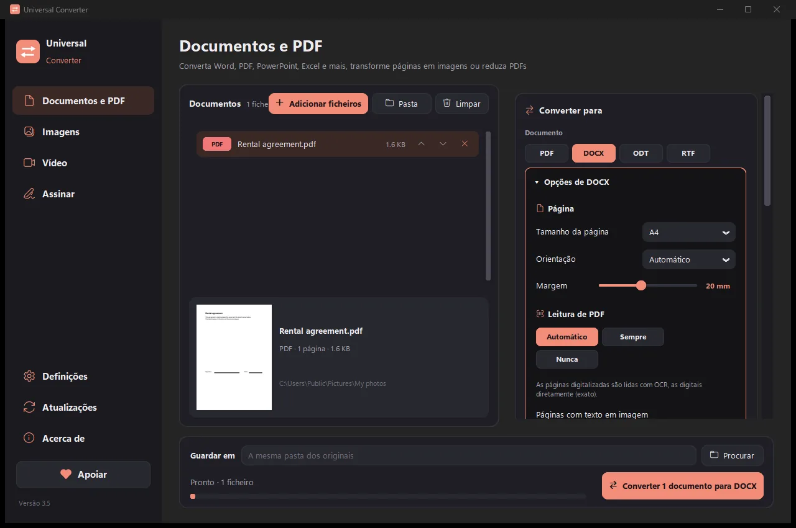

Passar tabelas de um PDF para Excel
O Universal Converter encontra as tabelas em cada página, mesmo em páginas digitalizadas e fotos, que lê com reconhecimento de texto (OCR). Os números continuam a ser números, para os poder somar logo.
Como instalar e atualizar
- Abra o .dmg descarregado e arraste o Universal Converter para Aplicações.
- Abra a app. Da primeira vez, o macOS bloqueia-a porque não está assinada pela Apple: clique em OK.
- Abra Definições do Sistema > Privacidade e segurança, desça, clique em «Abrir mesmo assim» e introduza a sua palavra-passe. Só é preciso fazer isto uma vez.
Atualizações: se o permitir quando a app abre pela primeira vez, ela procura novas versões sempre que inicia, verifica a assinatura digital e instala-as quando escolher.
Como instalar e atualizar
- Toque em «Transferir para Android» no seu telemóvel.
- Abra o ficheiro transferido. Se o Android pedir, permita que o navegador ou o gestor de ficheiros instale apps.
- Toque em Instalar.
Atualizações: a app verifica cerca de uma vez por dia e avisa quando há uma nova versão. Transfira-a da mesma forma e instale-a por cima da antiga; as suas definições mantêm-se.
Como instalar e atualizar
- Transfira o ficheiro .AppImage.
- Torne-o executável: clique com o botão direito, Propriedades > Permissões e permita executá-lo como programa (ou num terminal: chmod +x Universal-Converter-*.AppImage).
- Faça duplo clique. Nada é instalado: a aplicação é este único ficheiro.
Atualizações: se o permitir na primeira abertura, procura novas versões sempre que inicia, verifica a assinatura digital e substitui o ficheiro AppImage onde ele está.
Como fazer
- Abra o Universal Converter.
- Arraste os ficheiros ou uma pasta inteira para a janela, ou clique em Adicionar ficheiros.
- Escolha Excel (ou CSV). Para digitalizações, escolha os idiomas do texto ou deixe em automático.
- Clique em Converter. Os novos ficheiros são guardados junto dos originais ou na pasta que escolher.

Porquê offline?
O Universal Converter trabalha no seu próprio dispositivo. Os seus ficheiros continuam privados, ficheiros grandes não são problema e funciona sem ligação à internet.
Mais coisas que faz
- Converter um PDF para Word
- Converter documentos Word para PDF
- Juntar vários ficheiros num PDF
- Comprimir um PDF para o tamanho que escolher
- Comprimir um PDF para 100 KB, 200 KB ou o tamanho pedido por um formulário
- Converter páginas de PDF em imagens JPG
- Transformar um documento digitalizado num Word editável
- Converter imagens entre JPG, PNG, WEBP e mais
- Redimensionar imagens ou reduzi-las a um tamanho de ficheiro
- Redimensionar uma foto ou assinatura para 20 KB, 50 KB ou píxeis exatos
- Juntar fotos num só PDF
- JPG para PDF com menos de 100 KB
- Copiar o texto de uma imagem (OCR)
- Comprimir um vídeo sem o enviar
- Converter vídeos entre MP4, MKV, WebM, MOV e AVI
- Guardar o som de um vídeo em MP3
- Criar um GIF a partir de um vídeo
- Converter um extrato bancário em PDF para Excel
- Extrair tabelas de faturas PDF para Excel
- Assinar um PDF
- Preencher um formulário PDF